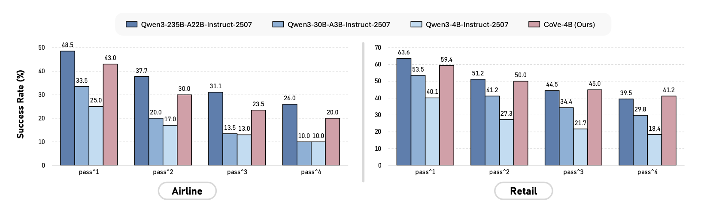
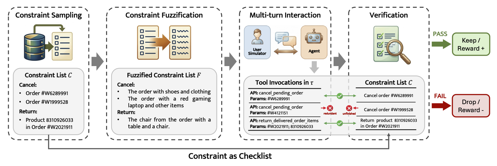

Figure 1. Performance evaluation on the τ2-bench Airline and Retail domains. We report success rates across pass1 to pass4 metrics to assess both peak performance and stability. CoVe-4B (4B parameters) rivals models up to 17× its size.
Developing multi-turn interactive tool-use agents is challenging because real-world user needs are often complex and ambiguous, yet agents must execute deterministic actions to satisfy them. To address this gap, we introduce CoVe (Constraint-Verification), a post-training data synthesis framework designed for training interactive tool-use agents while ensuring both data complexity and correctness. CoVe begins by defining explicit task constraints, which serve a dual role: they guide the generation of complex trajectories and act as deterministic verifiers for assessing trajectory quality. This enables the creation of high-quality training trajectories for supervised fine-tuning (SFT) and the derivation of accurate reward signals for reinforcement learning (RL). Our evaluation on the challenging τ2-bench benchmark demonstrates the effectiveness of the framework. Notably, our compact CoVe-4B model achieves success rates of 43.0% and 59.4% in the Airline and Retail domains, respectively; its overall performance significantly outperforms strong baselines of similar scale and remains competitive with models up to 17× its size. To support future research, we open-source our code, trained model, and the full set of 12K high-quality trajectories used for training.

Figure 2. The CoVe framework. Explicit constraints are sampled and fuzzified to guide a User Simulator LLM in generating ambiguous, realistic queries. Upon conversation completion, the original deterministic constraints act as a checklist to automatically verify the agent's tool invocations.
CoVe operates through a four-step pipeline: (1) Constraint Sampling, (2) Constraint Fuzzification, (3) Trajectory Generation, and (4) Deterministic Trajectory Verification.
A set of deterministic constraints C = {c₁, c₂, …, cₙ} is sampled directly from sandbox database records. Since all constraints are grounded in actual data, task solvability is logically guaranteed from the start.
Explicit identifiers (e.g., Order IDs) are transformed into natural, ambiguous descriptions (e.g., "the order with a blue shirt and leather shoes"), mimicking how real users communicate. Logical uniqueness is preserved throughout the transformation.
A User Simulator LLM uses the fuzzified instructions to engage in multi-turn dialogues with the Agent, progressively revealing needs rather than disclosing all constraints at once, increasing task difficulty and realism.
A rule-based verifier V(τ, C) checks the agent's tool invocations against each constraint. Unlike LLM-based evaluation, this yields exact, hallucination-free quality assessment, enabling reliable SFT data filtering and RL reward signals.
A powerful teacher model generates candidate trajectories. Only those receiving a perfect verification score (all constraints satisfied, zero redundancy) are retained, forming a clean, high-quality SFT dataset for training the student model.
CoVe serves as both the training environment and reward provider. The student agent interacts with the User Simulator to explore solution paths; the verifier's score is directly used as the RL reward signal, enabling self-improving learning loops.
We evaluate all models on the Airline and Retail domains of τ2-bench, reporting passk metrics (k = 1–4) to assess both task success rate and multi-trial stability.
Table 1. Main results evaluating proprietary and open-source models on the Airline and Retail domains of τ2-bench. Bold and underline denote the best and second-best results within each group. CoVe-4B (highlighted in blue) achieves top results in the ≤8B group and rivals much larger models.
| Model | Airline | Retail | Average | |||||||||
|---|---|---|---|---|---|---|---|---|---|---|---|---|
| pass1 | pass2 | pass3 | pass4 | pass1 | pass2 | pass3 | pass4 | pass1 | pass2 | pass3 | pass4 | |
| Proprietary Models | ||||||||||||
| GPT-5 | 62.5% | 55.3% | 51.0% | 48.0% | 81.6% | 71.8% | 64.7% | 58.8% | 72.1% | 63.6% | 57.9% | 53.4% |
| GPT-4o | 47.6% | 35.7% | 30.0% | 26.5% | 64.0% | 50.8% | 43.0% | 37.7% | 55.8% | 43.3% | 36.5% | 32.1% |
| Open-Source Models (≥70B) | ||||||||||||
| Qwen3-235B-A22B-Inst. | 48.5% | 37.7% | 31.0% | 26.0% | 63.6% | 51.2% | 44.5% | 39.5% | 56.1% | 44.5% | 37.8% | 32.8% |
| xLAM-2-70b-fc-r | 43.3% | 31.2% | 25.2% | 20.7% | 59.7% | 44.1% | 35.8% | 30.3% | 51.5% | 37.6% | 30.5% | 25.5% |
| Open-Source Models (~30B) | ||||||||||||
| Simia-Tau-32B | 48.5% | 36.3% | 32.0% | 30.0% | 62.5% | 50.1% | 41.9% | 36.0% | 55.5% | 43.2% | 37.0% | 33.0% |
| xLAM-2-32b-fc-r | 47.0% | 36.3% | 31.5% | 28.0% | 52.1% | 37.1% | 29.2% | 24.6% | 49.5% | 36.7% | 30.3% | 26.3% |
| GEM-32B | 35.5% | – | – | – | 55.5% | – | – | – | 45.5% | – | – | – |
| Qwen3-30B-A3B-Inst. | 33.5% | 20.0% | 13.5% | 10.0% | 53.5% | 41.2% | 34.4% | 29.8% | 43.5% | 30.6% | 24.0% | 19.9% |
| Open-Source Models (≤8B) | ||||||||||||
| Simia-Tau-8B | 42.5% | 33.0% | 29.0% | 26.0% | 52.4% | 39.6% | 32.7% | 28.1% | 47.5% | 36.3% | 30.9% | 27.1% |
| Simia-Tau-RL-8B | 43.0% | 34.0% | 29.0% | 26.0% | 52.4% | 41.1% | 34.9% | 30.7% | 47.7% | 37.6% | 32.0% | 28.4% |
| xLAM-2-8b-fc-r | 33.5% | 19.2% | 12.5% | 9.0% | 48.9% | 34.5% | 27.5% | 22.5% | 41.2% | 26.8% | 20.0% | 15.9% |
| GEM-8B | 22.0% | – | – | – | 44.5% | – | – | – | 33.3% | – | – | – |
| Qwen3-4B-Inst. | 25.0% | 17.0% | 13.0% | 10.0% | 40.1% | 27.3% | 21.7% | 18.4% | 32.6% | 22.2% | 17.4% | 14.2% |
| Simia-Tau-3B | 36.0% | – | – | – | 32.0% | – | – | – | 34.0% | – | – | – |
| xLAM-2-3b-fc-r | 24.0% | 12.7% | 7.5% | 4.0% | 15.1% | 8.8% | 6.4% | 5.3% | 19.6% | 10.8% | 7.0% | 4.7% |
| CoVe-4B Ours | 43.0% | 30.0% | 23.5% | 20.0% | 59.4% | 50.0% | 45.0% | 41.2% | 51.2% | 40.0% | 34.3% | 30.6% |
@article{Chen2026CoVe,
title = {CoVe: Training Interactive Tool-Use Agents via Constraint-Guided Verification},
author = {Chen, Jinpeng and Gong, Cheng and Li, Hanbo and Liu, Ziru and Tian, Zichen and Fu, Xinyu and Wu, Shi and Zhang, Chenyang and Zhang, Wu and Zhang, Suiyun and Tu, Dandan and Liu, Rui},
journal = {arXiv preprint arXiv:PLACEHOLDER_ARXIV_ID},
year = {2026}
}